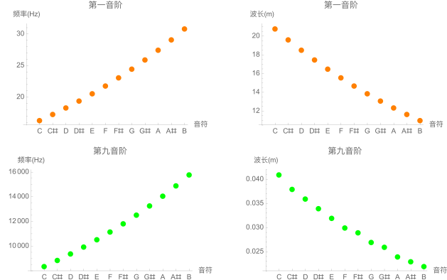
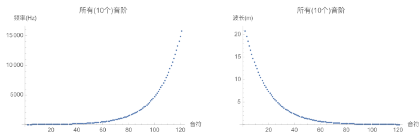
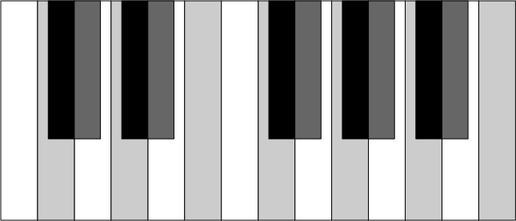

音乐的频率
所有音符都有特定的频率和波长，比如第一个音阶是这样的：
| 音符 | 频率(Hz) | 波长(m) |
|---|---|---|
| \(C\) | 16.351 | 20.812 |
| \(C^\# / D^b\) | 17.324 | 19.643 |
| \(D\) | 18.354 | 18.54 |
| \(D^\# / E^b\) | 19.445 | 17.5 |
| \(E\) | 20.601 | 16.518 |
| \(F\) | 21.827 | 15.59 |
| \(F^\# / G^b\) | 23.124 | 14.716 |
| \(G\) | 24.499 | 13.89 |
| \(G^\# / A^b\) | 25.956 | 13.11 |
| \(A\) | 27.5 | 12.374 |
| \(A^\# / B^b\) | 29.135 | 11.68 |
| \(B\) | 30.868 | 11.024 |
(数据来源)
如果我们把第一音阶和第九音阶的音符-频率-波长画出来，就会发现在同一个音阶里频率和波长的变化是很类似的。

又如果我们把十个音阶都描出来，就会发现频率和波长应该分别成指数递增和递减。

让我们先简单地假设音符的频率符合一个指数函数\(f(n)=e^{kn}\)，在此基础上，如果我们求得k，是不是我们就能“合成”更高，或者更低的音乐了呢？更进一步，在全音和半音之间我们能不能找到其他音呢？
其实，所有的音符频率的确是符合一个函数:$$f(n)=f(0)\cdot a^n$$ 这个函数中，\(f(0)\)是一个基准音的频率，一般选择\(A_4\)，也就是中音C上的第一个A。这个音的频率是\(f(0)=440\text{Hz}\)。这里\(a=2^{1/12}\)，\(n\)等于目标音符高于\(A_4\)的半分音符数量。至于为什么\(a=2^{1/12}\)（也就是为什么一个音阶是12个音符），可以参考这篇解释。
比如，\(C_5\)的频率为$$f(3)=f(0)\cdot a^3=440\cdot (2^{1/12})^3=523.251$$
有了这个公式，我们就可以回答上面的问题了。
更高的音
标准音阶中，最高的音是\(B_{9}\)，频率是15804.26 Hz。其实在人耳可听见的范围内\(\leq 20,000\text{Hz}\)，我们还可以听见这些音符：
| 音符 | 频率 |
|---|---|
| \(C_{10}\) | 16744.036 |
| \(C^\#_{10}\) | 17739.688 |
| \(D_{10}\) | 18794.545 |
| \(D^\#_{10}\) | 19912.126 |
然而，一般的设备是制造不出来这么高的音的。。
更低的音
其实，按照教课书（人听不见20Hz以下的声音），人是听不见这个标准音阶中最低的音\(C_0\)的（16.351 Hz)。
我用Mathematic试了一下，果然听不到，也有可能是软件不能生成这么低频的音。（或许你可以）
拓展音-半音和全音之间的音
如果我们把一个音阶分成24份，可能就会出现如下的键盘：

这里我用浅灰色和上标\(\delta\)代表全音的拓展音(e.g. \(C^{\delta}\))，用深灰色和上标\(\#\delta \)代表半音的拓展音(e.g. \(C^{\#\delta}\))。相应地，频率公式就应改写成：
$$f(n)=440\cdot (2^{1/24})^n$$
一起来听听看。
| 音符 | 频率 | 播放 |
|---|---|---|
| \(C_5\) | 523.251 | |
| \(C_5^{\delta}\) | 538.584 | |
| \(C_5^{\# }\) | 554.385 | |
| \(C_5^{\#\delta}\) | 570.609 | |
| \(D_5\) | 587.33 | |
| \(D_5^{\delta}\) | 604.54 | |
| \(D_5^{\# }\) | 622.254 | |
| \(D_5^{\#\delta}\) | 640.487 | |
| \(E_5\) | 659.255 | |
| \(E_5^{\delta}\) | 678.573 | |
| \(F_5\) | 698.456 | |
| \(F_5^{\delta}\) | 718.923 | |
| \(F_5^{\# }\) | 739.989 | |
| \(F_5^{\#\delta}\) | 761.672 | |
| \(G_5\) | 783.991 | |
| \(G_5^{\delta}\) | 806.964 | |
| \(G_5^{\# }\) | 830.609 | |
| \(G_5^{\#\delta}\) | 854.948 | |
| \(A_5\) | 880. | |
| \(A_5^{\delta}\) | 905.786 | |
| \(A_5^{\# }\) | 932.328 | |
| \(A_5^{\#\delta}\) | 959.647 | |
| \(B_5\) | 987.767 | |
| \(B_5^{\delta}\) | 1016.71 |